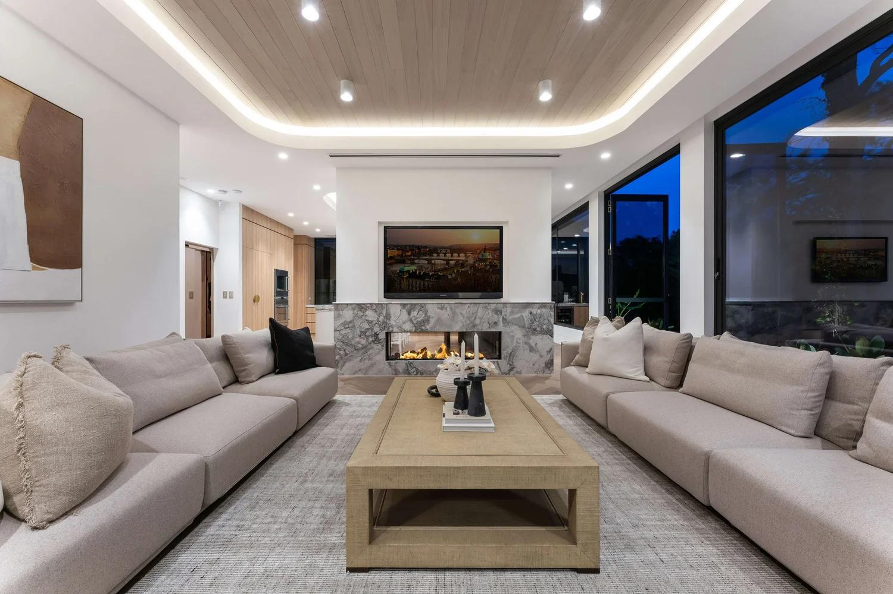
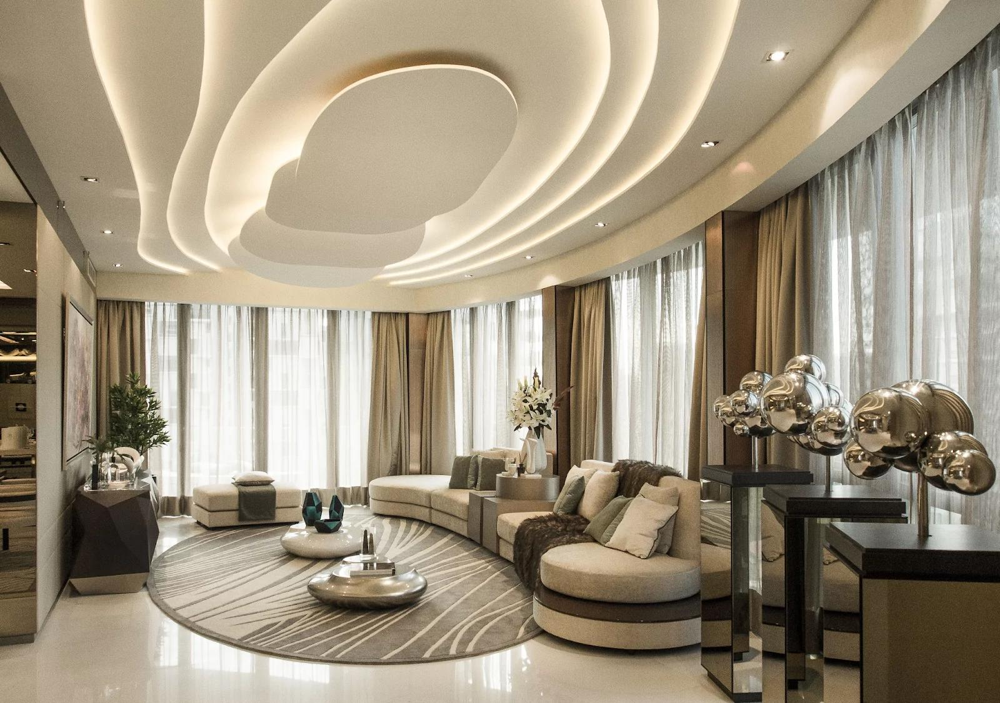
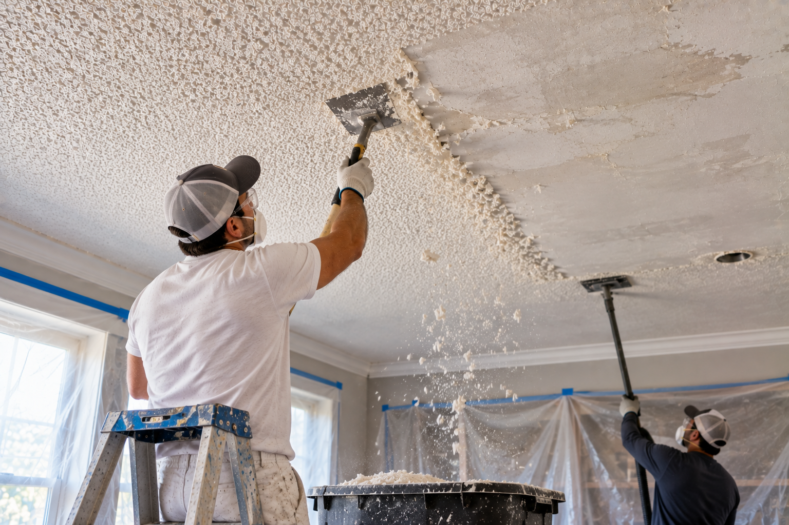
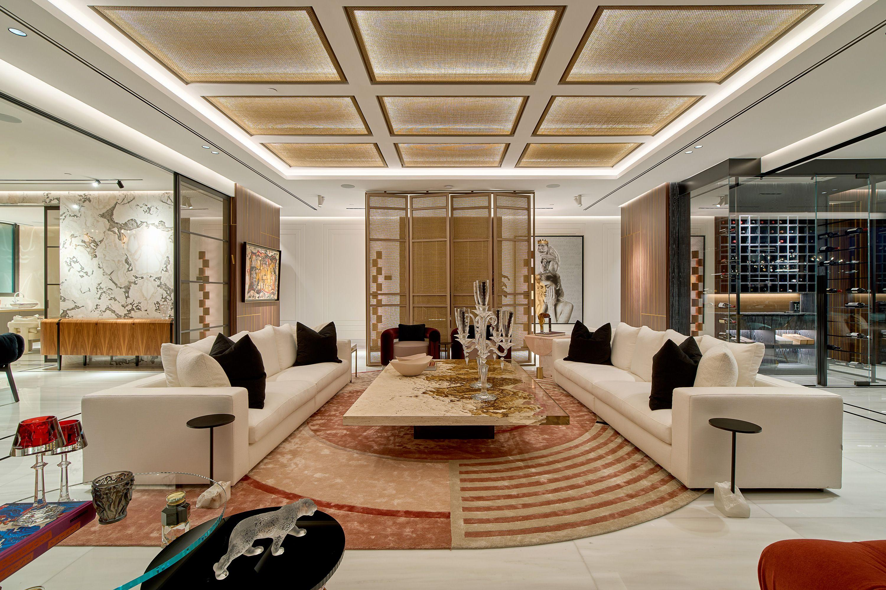

01
A More Modern Appearance
Removing the textured surface gives the ceiling a cleaner, more contemporary appearance that works naturally with updated interiors.
Specialty Ceiling Services

Transform an outdated popcorn ceiling into a cleaner, smoother surface designed to complement the rest of your interior.
Popcorn texture can make an otherwise updated interior feel dated. Removing it creates a smoother, cleaner surface that allows the rest of your space to stand out.

Removing the textured surface gives the ceiling a cleaner, more contemporary appearance that works naturally with updated interiors.
Deep ceiling texture can collect dust and make routine cleaning more difficult. A smoother surface is easier to maintain over time.
Removing heavy ceiling texture can make the room feel more open and balanced, allowing light, furniture and architectural details to read more clearly.
Once the texture is removed, the ceiling can be repaired, refined and prepared for a finish that feels intentional rather than overlooked.
Removing popcorn texture is more than scraping the ceiling. We carefully prepare, remove, repair and refine the surface so the finished ceiling feels clean and intentional.
We prepare the room and ceiling carefully before removal begins, helping protect surrounding surfaces and creating a controlled work area.
The existing popcorn texture is carefully removed from the ceiling to reveal the surface underneath without rushing the process.
Once the texture is gone, we address imperfections, uneven areas and surface details that need attention before the ceiling can be refined.
The surface is refined to create a more consistent, smoother foundation ready for the finishing stage.
The ceiling is prepared for its final finish, leaving the surface ready for repainting and a clean, cohesive appearance.
From an outdated textured surface to a cleaner, more refined ceiling — every stage of the transformation has a purpose.

The existing popcorn texture gives the ceiling a heavier, dated appearance.

The texture is removed and the surface is prepared for a smoother final appearance.

A smooth ceiling allows the architecture, lighting and interior details of the room to take center stage.
Removing a popcorn ceiling can change the entire feel of a room. We focus not only on the finished surface, but also on creating a clean, controlled and thoughtful experience throughout the work.
Your space is prepared before the removal process begins, helping keep the work area organized and controlled.
We approach the existing texture carefully, working through the removal process without treating every ceiling the same.
Once the texture is removed, we focus on the condition of the surface and the details that influence the final result.
The ceiling is refined and prepared for its final finish so the result feels consistent with the rest of the room.
The finished ceiling should feel like part of the overall interior rather than something that draws attention away from it.
Get a clear estimate and take the first step toward a smoother, more refined ceiling.
Get a Free Estimate